Introduccion
En la búsqueda de vida extraterrestre, nos enfrentamos a un enigma fascinante: ¿por qué aún no hemos encontrado señales de vida inteligente en el universo? Esta interrogante, conocida como la paradoja de Fermi, plantea una cuestión fundamental: si hay tantas estrellas y planetas en el cosmos, ¿dónde están las civilizaciones alienígenas? En este contexto, se han propuesto diversas explicaciones que abordan esta paradoja desde distintos ángulos. Desde la posibilidad de que estemos solos en el universo, hasta la hipótesis de que las civilizaciones extraterrestres evitan el contacto con nosotros deliberadamente. También se considera la idea de que estas sociedades extraterrestres podrían estar tan avanzadas tecnológicamente que nuestras señales de radio son obsoletas para ellos. Además, se plantea la hipótesis del Gran Filtro, que sugiere que las civilizaciones avanzadas tienen una vida útil limitada debido a diversos cataclismos. Sin embargo, una cuarta opción, la hipótesis del Bosque Oscuro, introduce una perspectiva intrigante sobre la naturaleza de las relaciones interestelares
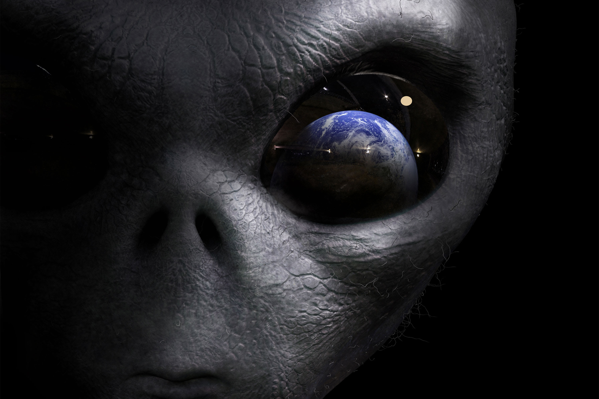El bosque oscuro
El libro "El Bosque Oscuro" del renombrado escritor chino de ciencia ficción, Liu Xingqing, presenta una intrigante visión sobre la existencia de civilizaciones extraterrestres y las complejas dinámicas que podrían existir entre ellas en el vasto cosmos. En esta obra, se introduce el concepto de Sociología Cósmica, que propone que las civilizaciones en el universo enfrentarán inevitablemente conflictos debido a la competencia por recursos limitados y la necesidad de supervivencia. Además, se exploran dos importantes factores: las cadenas de sospecha y la explosión tecnológica, que pueden influir en las interacciones entre civilizaciones. El autor utiliza la metáfora del bosque oscuro para ilustrar la precaución y el sigilo con los que las civilizaciones deben moverse en un universo lleno de peligros y posibles amenazas. Esta perspectiva ofrece una explicación fascinante para la paradoja de Fermi y plantea preguntas provocativas sobre la naturaleza de la vida extraterrestre y nuestro papel en el vasto cosmos.
Silencio extraterrestre
Una idea similar a la hipótesis del bosque oscuro es presentada por Charles R. Pellegrino y George Zabrowski en su novela de ciencia ficción The Killing Star, La estrella asesina. Como parte de un ejercicio mental, los autores plantean dos puntos de vista. En primer lugar, sugieren que la supervivencia de la propia especie es más importante para las civilizaciones que la supervivencia de otras. En primer lugar, sugieren que la supervivencia de la propia especie es más importante para las civilizaciones que la supervivencia de otras. En segundo lugar, sostienen que una especie que logra unificar su planeta y desarrollar la tecnología necesaria para viajar al espacio debe tener cierto grado de instinto y agresión. Esto se debe a que el impulso biológico fundamental de sobrevivir ha sido el motor detrás de gran parte del avance tecnológico y las innovaciones en la historia de la humanidad. Si estas dos premisas son correctas, entonces podemos asumir que son aplicables a otras especies inteligentes en el universo, esto siguiendo el principio cosmológico. Además, debemos suponer que estas otras especies tienen una perspectiva similar con respecto a nosotros, y aquí aparece también la cadena de sospechas de Liu, donde el miedo a las intenciones de los demás aumenta la probabilidad de conflictos. A simple vista, esta hipótesis proporciona una explicación coherente y lógica de por qué prevalece el gran silencio, por qué nadie dice nada, por qué los aliens no se manifiestan.
Contaco interestelar
Si examinamos la historia de la búsqueda de inteligencia extraterrestre SETI por parte de la humanidad, encontramos que la mayoría de los estudios de la humanidad han sido de la misma manera, pero la mayoría de esos esfuerzos han sido pasivos, o sea, han sido centrados en solamente escuchar. En contraste, los intentos de enviar mensajes a inteligencias extraterrestres, o METI, han sido muy limitados. Sí, por si no sabían, también existe METI, así como existe SETI. El término METI fue acuñado por el científico ruso Alexander Zaitsev, quien publicó un artículo en el 2006 para distinguir entre estos dos enfoques. Por un lado, SETI se dedica a la búsqueda de mensajes extraterrestres, mientras que METI se dedica a la creación de mensajes dirigidos a extraterrestres. Aunque en las últimas décadas se han realizado esfuerzos para enviar mensajes a inteligencias extraterrestres y ha habido desarrollos paralelos en el campo de SETI, en comparación, estos esfuerzos han sido modestos y en su mayoría de naturaleza privada. En total, se han llevado a cabo nueve proyectos METI desde 1962 y se espera que en el futuro cercano se realicen algunos proyectos adicionales
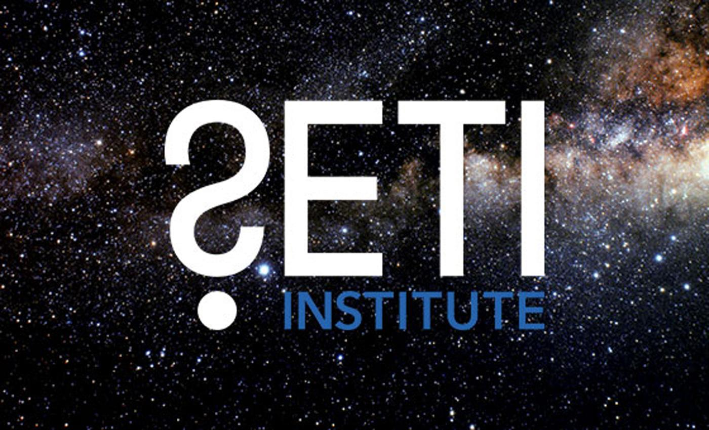 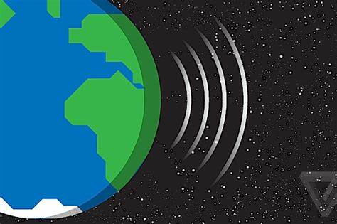El mensaje morse
El primer intento fue realizado por científicos del Centro Epatoria Planetaria Radar, o EPR, en Crimea y se conoce como el Mensaje Morse. Consistió en una transmisión de radio en código morse dirigida a Venus, que en ese momento los científicos consideraban como potencialmente habitable. El mensaje consistía en las letras MIR, que significa paz en ruso, seguidas de Lenin y SSR.
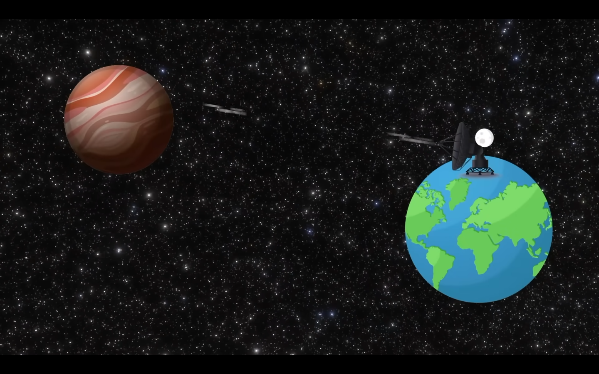Mensaje de Arecibo
El segundo ejemplo, y posiblemente el más conocido, fue el mensaje de Arecibo, enviado desde el Observatorio de Arecibo en 1974. Este mensaje fue elaborado por el mismísimo Frank Drake, el de la ecuación de Drake, y el mismísimo Kahneman, el de la ecuación de Drake. El mensaje consistía en una imagen visual compuesta por 1679 dígitos binarios dispuestos en un rectángulo con dimensiones de 73 filas por 23 columnas. Ambos números son primos. Estaba dirigido al cúmulo globular de estrellas de M13, ubicado a 21.000 años 2 de la Tierra, y estaba estructurado para incluir elementos fáciles de entender dispuestos en diferentes colores, entre ellos los números del 1 al 10, los números atómicos de hidrógeno, carbono, nitrógeno, oxígeno y fósforo, que forman el ADN, las fórmulas de los azúcares y las bases de los nucleótidos del ADN, el número de nucleótidos en el ADN, un gráfico de la estructura de doble hélice del ADN, una figura de palo que representa el perfil de un ser humano, la población humana de la Tierra, que en ese entonces era 4.000 millones, un gráfico del sistema solar con la Tierra indicada, un gráfico de radiotelescopio de Arecibo y dimensiones del plato de la antena.
 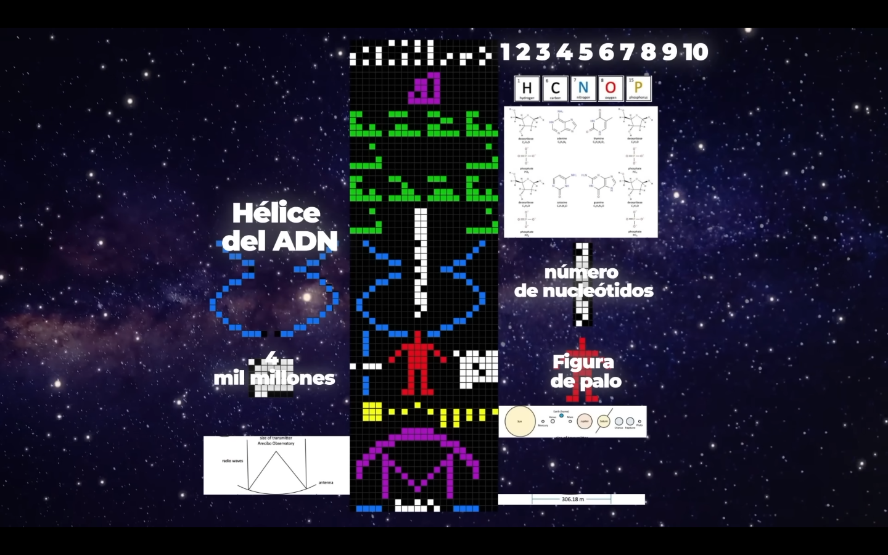
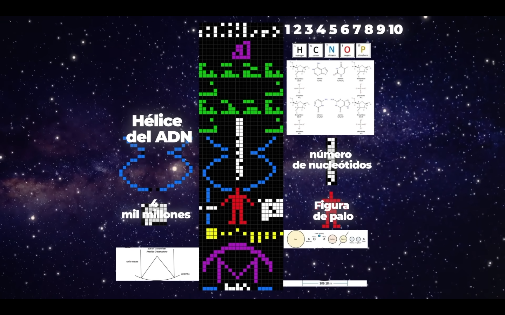
Conclusiòn
Si la hipótesis del bosque oscuro se mantiene, entonces esto debería considerarse una buena noticia y deberíamos ya dejar de transmitir. ¿Para qué queremos que nos encuentre? Sí, hay una posibilidad de que los extraterrestres ya sepan nuestra existencia y no solo eso. En nuestros mensajes también hemos incluido nuestros requisitos de supervivencia y cómo contactarnos. Al final fue el famoso científico y legendario autor de ciencia ficción Arthur C. Clarke quien mejor lo dijo. Hay dos escenarios posibles. O estamos solos en el universo o no lo estamos. Ambos escenarios son igualmente inquietantes. Si estamos solos significa que a pesar de los trecemil ochocientos millones de años de historia del universo y la abundancia de galaxias estrellas y planetas la humanidad representa la forma de vida mas avanzada que existe en esencia somos la maxima expresion de lo que el universo puede crear y nos encontramos solos con la inevitable extincion como unica compañia en el futuro, por otro lado si no estamos solos y el universo esta lleno de vida esto inplica que existe inumerables civilizaciones que enfrentan las misma incertidumbres que nosotros el echo que no conozccamos sus intenciones ni ellos las nuestras abre la puerta a infinitas posibilidades de conflictos y mal entendidos
Galerìa
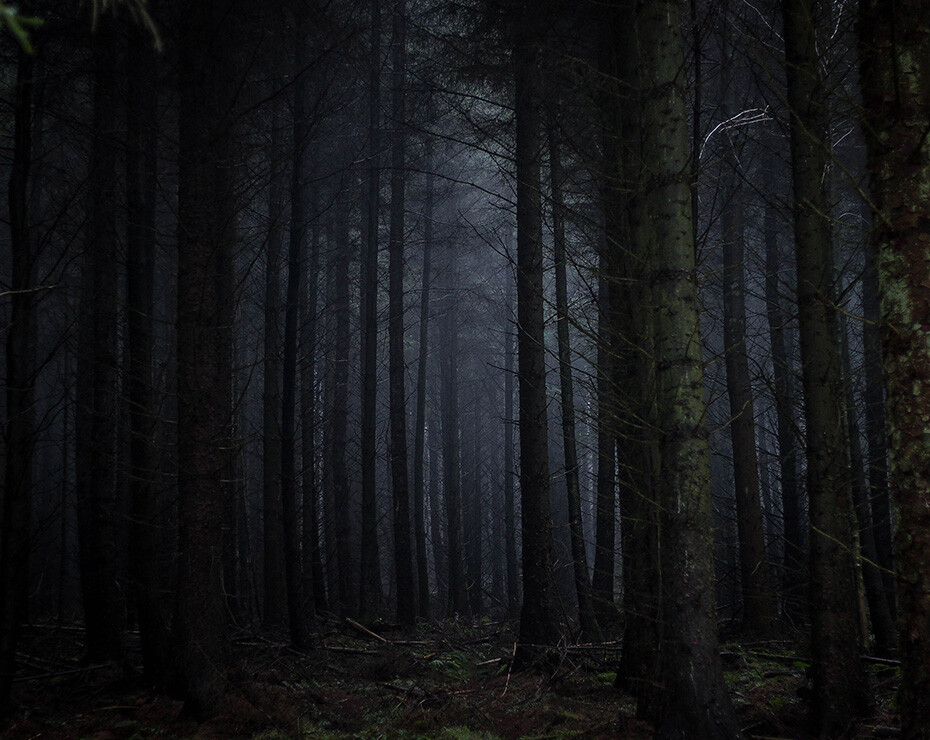 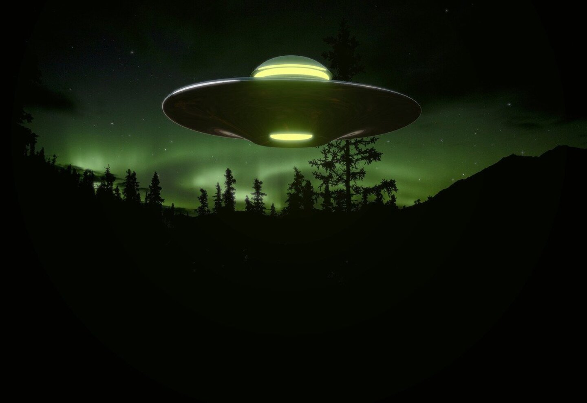
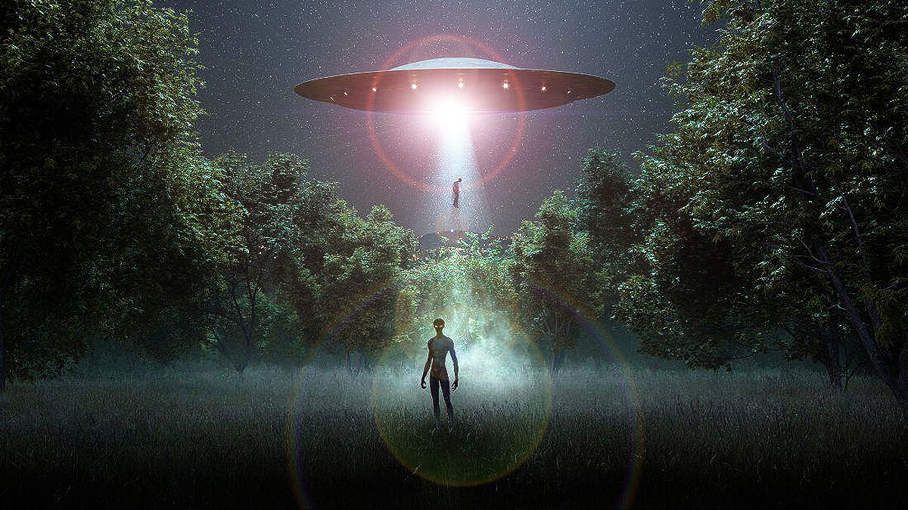
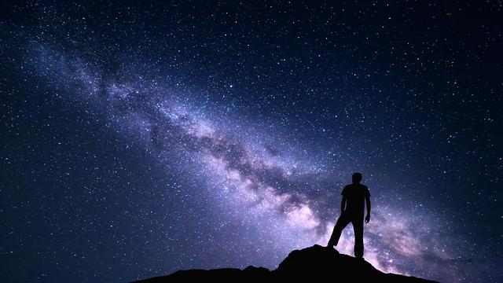
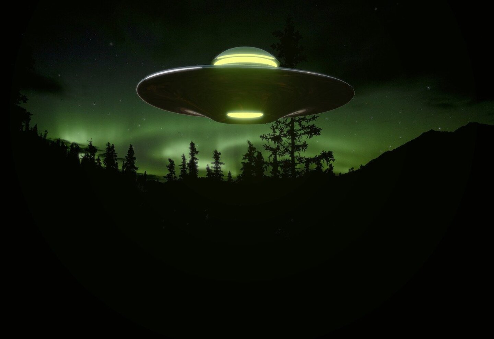
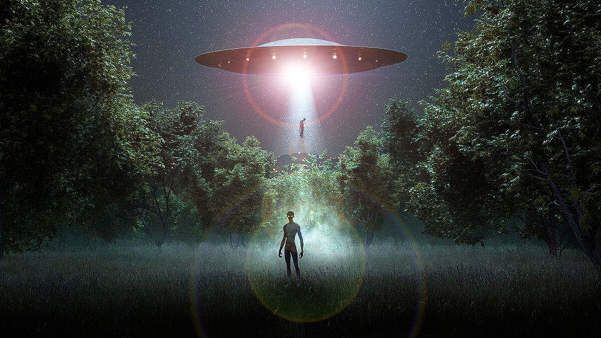
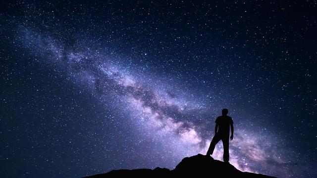